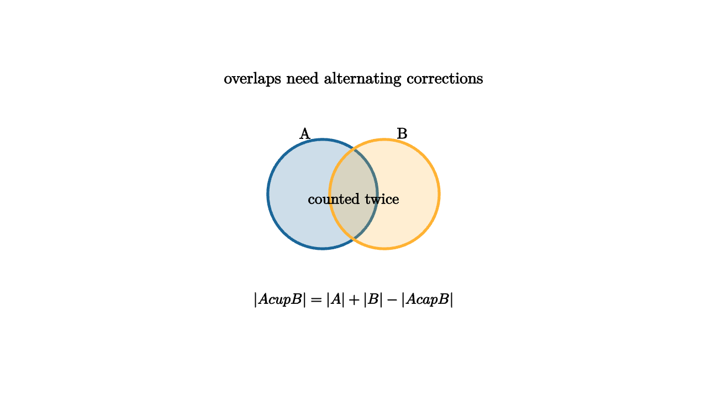

Inclusion-Exclusion Cancels Overcounting
Counting becomes hard when objects satisfy at least one of several conditions. A student may belong to the math club, the robotics club, both, or neither. If we add club memberships, students in both clubs are counted twice. The cure is to add the easy counts, subtract the overlaps, and keep correcting until each object contributes exactly once.
For two sets,
For three sets, add the singles, subtract the pairwise overlaps, then add the triple overlap:

source
mesh scene = [
center{1.35u} Text("overlaps need alternating corrections", 0.66),
center{[-0.35, 0.05, 0]} fill{alpha{0.22} BLUE} stroke{BLUE, 3} Circle(0.62),
center{[0.35, 0.05, 0]} fill{alpha{0.22} ORANGE} stroke{ORANGE, 3} Circle(0.62),
center{[-0.55, 0.74, 0]} Text("A", 0.62),
center{[0.55, 0.74, 0]} Text("B", 0.62),
center{0r} Text("counted twice", 0.62),
center{1.15d} Tex("|A\\cup B|=|A|+|B|-|A\\cap B|", 0.60)
]The rule works because each object can be analyzed by how many conditions it satisfies. If an object belongs to exactly r of the sets, then it is counted
This alternating sum equals 1 when r > 0. Objects satisfying no condition contribute 0. Inclusion-exclusion is therefore a weight-correcting machine.
source
let TwoSets = |stage| [
center{[-0.36 + 0.1 * stage, 0.05, 0]} fill{alpha{0.18 + 0.08 * stage} BLUE} stroke{BLUE, 3} Circle(0.62),
center{[0.36 - 0.1 * stage, 0.05, 0]} fill{alpha{0.18 + 0.08 * stage} ORANGE} stroke{ORANGE, 3} Circle(0.62),
center{0r} fill{alpha{0.16 * stage} MAGENTA} stroke{MAGENTA, 3} Circle(0.22)
]
"Add"
mesh title = center{1.34u} Text("correct the weight of the overlap", 0.64)
mesh sets = TwoSets(0)
mesh formula = center{1.12d} Tex("|A|+|B|", 0.68)
play Fade(0.7)
play Write(0.7)
"Subtract"
sets = TwoSets(1)
formula = center{1.12d} Tex("|A|+|B|-|A\\cap B|", 0.62)
play [Lerp(1.0, [&sets]), Trans(0.8, [&formula])]
"Weight One"
formula = center{1.12d} Text("inside the union, every object has total weight 1", 0.62)
play Trans(0.8)The classic application is derangements. How many permutations of n people give nobody their own hat? Let A_i be the set of permutations where person i gets their own hat. We want to avoid all A_i, so we count the complement:
After factoring n!, this becomes
The expression is close to n!/e, which gives a memorable approximation and a reason that derangements appear with probability near 1/e.
Inclusion-exclusion also has a generating-function personality. To count objects avoiding forbidden properties, we can assign a marker to each violation and evaluate at a negative value so violations cancel. This viewpoint leads to rook polynomials, chromatic polynomials, and the Mobius inversion principle on partially ordered sets.
For graph coloring, the chromatic polynomial can be derived by inclusion-exclusion over edges whose endpoints receive the same color. Start with all q^n colorings of n vertices. Subtract colorings where a specified edge is bad. Add back colorings where two specified edges are bad, and continue. The final polynomial counts proper colorings.
The danger is mechanical use without a model. Inclusion-exclusion is easiest when the forbidden conditions are named clearly and intersections are easy to count. The intersections tell the whole story. If satisfying a chosen set of restrictions leaves (n-k)! choices, or q^{c} choices, or a simple product, then inclusion-exclusion will likely help.
The principle is one of the best examples of algebraic bookkeeping. We do not draw every object. We assign it a weight based on how many easy sets contain it. The alternating signs then force the total weight to become the desired count.